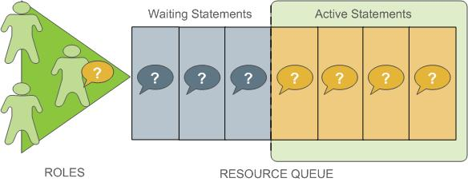

Using Resource Queues
Use SynxDB resource queues to prioritize and allocate resources to queries according to business requirements and to prevent queries from starting when resources are unavailable.
Resource queues are one tool to manage the degree of concurrency in a SynxDB system. Resource queues are database objects that you create with the CREATE RESOURCE QUEUE SQL statement. You can use them to manage the number of active queries that may run concurrently, the amount of memory each type of query is allocated, and the relative priority of queries. Resource queues can also guard against queries that would consume too many resources and degrade overall system performance.
Each database role is associated with a single resource queue; multiple roles can share the same resource queue. Roles are assigned to resource queues using the RESOURCE QUEUE phrase of the CREATE ROLE or ALTER ROLE statements. If a resource queue is not specified, the role is associated with the default resource queue, pg_default.
When the user submits a query for execution, the query is evaluated against the resource queue’s limits. If the query does not cause the queue to exceed its resource limits, then that query will run immediately. If the query causes the queue to exceed its limits (for example, if the maximum number of active statement slots are currently in use), then the query must wait until queue resources are free before it can run. Queries are evaluated on a first in, first out basis. If query prioritization is enabled, the active workload on the system is periodically assessed and processing resources are reallocated according to query priority (see How Priorities Work). Roles with the SUPERUSER attribute are exempt from resource queue limits. Superuser queries always run immediately regardless of limits imposed by their assigned resource queue.

Resource queues define classes of queries with similar resource requirements. Administrators should create resource queues for the various types of workloads in their organization. For example, you could create resource queues for the following classes of queries, corresponding to different service level agreements:
- ETL queries
- Reporting queries
- Executive queries
A resource queue has the following characteristics:
MEMORY_LIMIT
: The amount of memory used by all the queries in the queue (per segment). For example, setting MEMORY_LIMIT to 2GB on the ETL queue allows ETL queries to use up to 2GB of memory in each segment.
ACTIVE_STATEMENTS
: The number of slots for a queue; the maximum concurrency level for a queue. When all slots are used, new queries must wait. Each query uses an equal amount of memory by default.
For example, the pg_default resource queue has ACTIVE_STATEMENTS = 20.
PRIORITY
: The relative CPU usage for queries. This may be one of the following levels: LOW, MEDIUM, HIGH, MAX. The default level is MEDIUM. The query prioritization mechanism monitors the CPU usage of all the queries running in the system, and adjusts the CPU usage for each to conform to its priority level. For example, you could set MAX priority to the executive resource queue and MEDIUM to other queues to ensure that executive queries receive a greater share of CPU.
MAX_COST
: Query plan cost limit.
The SynxDB optimizer assigns a numeric cost to each query. If the cost exceeds the MAX_COST value set for the resource queue, the query is rejected as too expensive.
Note GPORCA and the Postgres Planner utilize different query costing models and may compute different costs for the same query. The SynxDB resource queue resource management scheme neither differentiates nor aligns costs between GPORCA and the Postgres Planner; it uses the literal cost value returned from the optimizer to throttle queries.
When resource queue-based resource management is active, use the MEMORY_LIMIT and ACTIVE_STATEMENTS limits for resource queues rather than configuring cost-based limits. Even when using GPORCA, SynxDB may fall back to using the Postgres Planner for certain queries, so using cost-based limits can lead to unexpected results.
The default configuration for a SynxDB system has a single default resource queue named pg_default. The pg_default resource queue has an ACTIVE_STATEMENTS setting of 20, no MEMORY_LIMIT, medium PRIORITY, and no set MAX_COST. This means that all queries are accepted and run immediately, at the same priority and with no memory limitations; however, only twenty queries may run concurrently.
The number of concurrent queries a resource queue allows depends on whether the MEMORY_LIMIT parameter is set:
- If no
MEMORY_LIMITis set for a resource queue, the amount of memory allocated per query is the value of the statement_mem server configuration parameter. The maximum memory the resource queue can use is the product ofstatement_memandACTIVE_STATEMENTS. - When a
MEMORY_LIMITis set on a resource queue, the number of queries that the queue can run concurrently is limited by the queue’s available memory.
A query admitted to the system is allocated an amount of memory and a query plan tree is generated for it. Each node of the tree is an operator, such as a sort or hash join. Each operator is a separate execution thread and is allocated a fraction of the overall statement memory, at minimum 100KB. If the plan has a large number of operators, the minimum memory required for operators can exceed the available memory and the query will be rejected with an insufficient memory error. Operators determine if they can complete their tasks in the memory allocated, or if they must spill data to disk, in work files. The mechanism that allocates and controls the amount of memory used by each operator is called memory quota.
Not all SQL statements submitted through a resource queue are evaluated against the queue limits. By default only SELECT, SELECT INTO, CREATE TABLE AS SELECT, and DECLARE CURSOR statements are evaluated. If the server configuration parameter resource_select_only is set to off, then INSERT, UPDATE, and DELETE statements will be evaluated as well.
Also, an SQL statement that is run during the execution of an EXPLAIN ANALYZE command is excluded from resource queues.
Resource Queue Example
The default resource queue, pg_default, allows a maximum of 20 active queries and allocates the same amount of memory to each. This is generally not adequate resource control for production systems. To ensure that the system meets performance expectations, you can define classes of queries and assign them to resource queues configured to run them with the concurrency, memory, and CPU resources best suited for that class of query.
The following illustration shows an example resource queue configuration for a SynxDB system with gp_vmem_protect_limit set to 8GB:

This example has three classes of queries with different characteristics and service level agreements (SLAs). Three resource queues are configured for them. A portion of the segment memory is reserved as a safety margin.
| Resource Queue Name | Active Statements | Memory Limit | Memory per Query |
|---|---|---|---|
| ETL | 3 | 2GB | 667MB |
| Reporting | 7 | 3GB | 429MB |
| Executive | 1 | 1.4GB | 1.4GB |
The total memory allocated to the queues is 6.4GB, or 80% of the total segment memory defined by the gp_vmem_protect_limit server configuration parameter. Allowing a safety margin of 20% accommodates some operators and queries that are known to use more memory than they are allocated by the resource queue.
See the CREATE RESOURCE QUEUE and CREATE/ALTER ROLE statements in the SynxDB Reference Guide for help with command syntax and detailed reference information.
How Memory Limits Work
Setting MEMORY_LIMIT on a resource queue sets the maximum amount of memory that all active queries submitted through the queue can consume for a segment instance. The amount of memory allotted to a query is the queue memory limit divided by the active statement limit. (Use the memory limits in conjunction with statement-based queues rather than cost-based queues.) For example, if a queue has a memory limit of 2000MB and an active statement limit of 10, each query submitted through the queue is allotted 200MB of memory by default. The default memory allotment can be overridden on a per-query basis using the statement_mem server configuration parameter (up to the queue memory limit). Once a query has started running, it holds its allotted memory in the queue until it completes, even if during execution it actually consumes less than its allotted amount of memory.
You can use the statement_mem server configuration parameter to override memory limits set by the current resource queue. At the session level, you can increase statement_mem up to the resource queue’s MEMORY_LIMIT. This will allow an individual query to use all of the memory allocated for the entire queue without affecting other resource queues.
The value of statement_mem is capped using the max_statement_mem configuration parameter (a superuser parameter). For a query in a resource queue with MEMORY_LIMIT set, the maximum value for statement_mem is min(MEMORY_LIMIT, max_statement_mem). When a query is admitted, the memory allocated to it is subtracted from MEMORY_LIMIT. If MEMORY_LIMIT is exhausted, new queries in the same resource queue must wait. This happens even if ACTIVE_STATEMENTS has not yet been reached. Note that this can happen only when statement_mem is used to override the memory allocated by the resource queue.
For example, consider a resource queue named adhoc with the following settings:
MEMORY_LIMITis 1.5GBACTIVE_STATEMENTSis 3
By default each statement submitted to the queue is allocated 500MB of memory. Now consider the following series of events:
- User
ADHOC_1submits queryQ1, overridingSTATEMENT_MEMto 800MB. TheQ1statement is admitted into the system. - User
ADHOC_2submits queryQ2, using the default 500MB. - With
Q1andQ2still running, userADHOC3submits queryQ3, using the default 500MB.
Queries Q1 and Q2 have used 1300MB of the queue’s 1500MB. Therefore, Q3 must wait for Q1 or Q2 to complete before it can run.
If MEMORY_LIMIT is not set on a queue, queries are admitted until all of the ACTIVE_STATEMENTS slots are in use, and each query can set an arbitrarily high statement_mem. This could lead to a resource queue using unbounded amounts of memory.
For more information on configuring memory limits on a resource queue, and other memory utilization controls, see Creating Queues with Memory Limits.
statement_mem and Low Memory Queries
A low statement_mem setting (for example, in the 1-3MB range) has been shown to increase the performance of queries with low memory requirements. Use the statement_mem server configuration parameter to override the setting on a per-query basis. For example:
SET statement_mem='2MB';
How Priorities Work
The PRIORITY setting for a resource queue differs from the MEMORY_LIMIT and ACTIVE_STATEMENTS settings, which determine whether a query will be admitted to the queue and eventually run. The PRIORITY setting applies to queries after they become active. Active queries share available CPU resources as determined by the priority settings for its resource queue. When a statement from a high-priority queue enters the group of actively running statements, it may claim a greater share of the available CPU, reducing the share allocated to already-running statements in queues with a lesser priority setting.
The comparative size or complexity of the queries does not affect the allotment of CPU. If a simple, low-cost query is running simultaneously with a large, complex query, and their priority settings are the same, they will be allocated the same share of available CPU resources. When a new query becomes active, the CPU shares will be recalculated, but queries of equal priority will still have equal amounts of CPU.
For example, an administrator creates three resource queues: adhoc for ongoing queries submitted by business analysts, reporting for scheduled reporting jobs, and executive for queries submitted by executive user roles. The administrator wants to ensure that scheduled reporting jobs are not heavily affected by unpredictable resource demands from ad-hoc analyst queries. Also, the administrator wants to make sure that queries submitted by executive roles are allotted a significant share of CPU. Accordingly, the resource queue priorities are set as shown:
- adhoc — Low priority
- reporting — High priority
- executive — Maximum priority
At runtime, the CPU share of active statements is determined by these priority settings. If queries 1 and 2 from the reporting queue are running simultaneously, they have equal shares of CPU. When an ad-hoc query becomes active, it claims a smaller share of CPU. The exact share used by the reporting queries is adjusted, but remains equal due to their equal priority setting:

Note The percentages shown in these illustrations are approximate. CPU usage between high, low and maximum priority queues is not always calculated in precisely these proportions.
When an executive query enters the group of running statements, CPU usage is adjusted to account for its maximum priority setting. It may be a simple query compared to the analyst and reporting queries, but until it is completed, it will claim the largest share of CPU.
For more information about commands to set priorities, see Setting Priority Levels.
Steps to Enable Resource Management
Enabling and using resource management in SynxDB involves the following high-level tasks:
- Configure resource management. See Configuring Resource Management.
- Create the resource queues and set limits on them. See Creating Resource Queues and Modifying Resource Queues.
- Assign a queue to one or more user roles. See Assigning Roles (Users) to a Resource Queue.
- Use the resource management system views to monitor and manage the resource queues. See Checking Resource Queue Status.
Configuring Resource Management
Resource scheduling is enabled by default when you install SynxDB, and is required for all roles. The default resource queue, pg_default, has an active statement limit of 20, no memory limit, and a medium priority setting. Create resource queues for the various types of workloads.
To configure resource management
-
The following parameters are for the general configuration of resource queues:
max_resource_queues- Sets the maximum number of resource queues.max_resource_portals_per_transaction- Sets the maximum number of simultaneously open cursors allowed per transaction. Note that an open cursor will hold an active query slot in a resource queue.resource_select_only- If set to on, thenSELECT,SELECT INTO,CREATE TABLE AS``SELECT, andDECLARE CURSORcommands are evaluated. If set to offINSERT,UPDATE, andDELETEcommands will be evaluated as well.resource_cleanup_gangs_on_wait- Cleans up idle segment worker processes before taking a slot in the resource queue.stats_queue_level- Enables statistics collection on resource queue usage, which can then be viewed by querying the pg_stat_resqueues system view.
-
The following parameters are related to memory utilization:
-
gp_resqueue_memory_policy- Enables SynxDB memory management features.In SynxDB4.2 and later, the distribution algorithm
eager_freetakes advantage of the fact that not all operators run at the same time. The query plan is divided into stages and SynxDB eagerly frees memory allocated to a previous stage at the end of that stage’s execution, then allocates the eagerly freed memory to the new stage.When set to
none, memory management is the same as in SynxDB releases prior to 4.1. When set toauto, query memory usage is controlled bystatement_memand resource queue memory limits. -
statement_memandmax_statement_mem- Used to allocate memory to a particular query at runtime (override the default allocation assigned by the resource queue).max_statement_memis set by database superusers to prevent regular database users from over-allocation. -
gp_vmem_protect_limit- Sets the upper boundary that all query processes can consume and should not exceed the amount of physical memory of a segment host. When a segment host reaches this limit during query execution, the queries that cause the limit to be exceeded will be cancelled. -
gp_vmem_idle_resource_timeoutandgp_vmem_protect_segworker_cache_limit- used to free memory on segment hosts held by idle database processes. Administrators may want to adjust these settings on systems with lots of concurrency. -
shared_buffers- Sets the amount of memory a SynxDB server instance uses for shared memory buffers. This setting must be at least 128 kilobytes and at least 16 kilobytes timesmax_connections. The value must not exceed the operating system shared memory maximum allocation request size,shmmaxon Linux. See the SynxDB Installation Guide for recommended OS memory settings for your platform.
-
-
The following parameters are related to query prioritization. Note that the following parameters are all local parameters, meaning they must be set in the
postgresql.conffiles of the master and all segments:-
gp_resqueue_priority- The query prioritization feature is enabled by default. -
gp_resqueue_priority_sweeper_interval- Sets the interval at which CPU usage is recalculated for all active statements. The default value for this parameter should be sufficient for typical database operations. -
gp_resqueue_priority_cpucores_per_segment- Specifies the number of CPU cores allocated per segment instance on a segment host. If the segment is configured with primary-mirror segment instance pairs, use the number of primary segment instances on the host in the calculation. The default value is 4 for the master and segment hosts.Each SynxDB host checks its own
postgresql.conffile for the value of this parameter. This parameter also affects the master host, where it should be set to a value reflecting the higher ratio of CPU cores. For example, on a cluster that has 10 CPU cores per segment host and 4 primary segments per host, you would specify the following values forgp_resqueue_priority_cpucores_per_segment:- 10 on the master and standby master hosts. Typically, only a single master segment instance runs on the master host.
- 2.5 on each segment host (10 cores divided by 4 primary segments).
If the parameter value is not set correctly, either the CPU might not be fully utilized, or query prioritization might not work as expected. For example, if the SynxDB cluster has fewer than one segment instance per CPU core on your segment hosts, make sure that you adjust this value accordingly.
Actual CPU core utilization is based on the ability of SynxDB to parallelize a query and the resources required to run the query.
Note Include any CPU core that is available to the operating system in the number of CPU cores, including virtual CPU cores.
-
-
If you wish to view or change any of the resource management parameter values, you can use the
gpconfigutility. -
For example, to see the setting of a particular parameter:
$ gpconfig --show gp_vmem_protect_limit -
For example, to set one value on all segment instances and a different value on the master:
$ gpconfig -c gp_resqueue_priority_cpucores_per_segment -v 2 -m 8 -
Restart SynxDB to make the configuration changes effective:
$ gpstop -r
Creating Resource Queues
Creating a resource queue involves giving it a name, setting an active query limit, and optionally a query priority on the resource queue. Use the CREATE RESOURCE QUEUE command to create new resource queues.
Creating Queues with an Active Query Limit
Resource queues with an ACTIVE_STATEMENTS setting limit the number of queries that can be run by roles assigned to that queue. For example, to create a resource queue named adhoc with an active query limit of three:
=# CREATE RESOURCE QUEUE adhoc WITH (ACTIVE_STATEMENTS=3);
This means that for all roles assigned to the adhoc resource queue, only three active queries can be running on the system at any given time. If this queue has three queries running, and a fourth query is submitted by a role in that queue, that query must wait until a slot is free before it can run.
Creating Queues with Memory Limits
Resource queues with a MEMORY_LIMITsetting control the amount of memory for all the queries submitted through the queue. The total memory should not exceed the physical memory available per-segment. SetMEMORY_LIMIT to 90% of memory available on a per-segment basis. For example, if a host has 48 GB of physical memory and 6 segment instances, then the memory available per segment instance is 8 GB. You can calculate the recommended MEMORY_LIMIT for a single queue as 0.90*8=7.2 GB. If there are multiple queues created on the system, their total memory limits must also add up to 7.2 GB.
When used in conjunction with ACTIVE_STATEMENTS, the default amount of memory allotted per query is: MEMORY_LIMIT``/``ACTIVE_STATEMENTS. When used in conjunction with MAX_COST, the default amount of memory allotted per query is: MEMORY_LIMIT * (query_cost /MAX_COST). Use MEMORY_LIMIT in conjunction with ACTIVE_STATEMENTS rather than with MAX_COST.
For example, to create a resource queue with an active query limit of 10 and a total memory limit of 2000MB (each query will be allocated 200MB of segment host memory at execution time):
=# CREATE RESOURCE QUEUE myqueue WITH (ACTIVE_STATEMENTS=20,
MEMORY_LIMIT='2000MB');
The default memory allotment can be overridden on a per-query basis using the statement_mem server configuration parameter, provided that MEMORY_LIMIT or max_statement_mem is not exceeded. For example, to allocate more memory to a particular query:
=> SET statement_mem='2GB';
=> SELECT * FROM my_big_table WHERE column='value' ORDER BY id;
=> RESET statement_mem;
As a general guideline, MEMORY_LIMIT for all of your resource queues should not exceed the amount of physical memory of a segment host. If workloads are staggered over multiple queues, it may be OK to oversubscribe memory allocations, keeping in mind that queries may be cancelled during execution if the segment host memory limit (gp_vmem_protect_limit) is exceeded.
Setting Priority Levels
To control a resource queue’s consumption of available CPU resources, an administrator can assign an appropriate priority level. When high concurrency causes contention for CPU resources, queries and statements associated with a high-priority resource queue will claim a larger share of available CPU than lower priority queries and statements.
Priority settings are created or altered using the WITH parameter of the commands CREATE RESOURCE QUEUE and ALTER RESOURCE QUEUE. For example, to specify priority settings for the adhoc and reporting queues, an administrator would use the following commands:
=# ALTER RESOURCE QUEUE adhoc WITH (PRIORITY=LOW);
=# ALTER RESOURCE QUEUE reporting WITH (PRIORITY=HIGH);
To create the executive queue with maximum priority, an administrator would use the following command:
=# CREATE RESOURCE QUEUE executive WITH (ACTIVE_STATEMENTS=3, PRIORITY=MAX);
When the query prioritization feature is enabled, resource queues are given a MEDIUM priority by default if not explicitly assigned. For more information on how priority settings are evaluated at runtime, see How Priorities Work.
Important In order for resource queue priority levels to be enforced on the active query workload, you must enable the query prioritization feature by setting the associated server configuration parameters. See Configuring Resource Management.
Assigning Roles (Users) to a Resource Queue
Once a resource queue is created, you must assign roles (users) to their appropriate resource queue. If roles are not explicitly assigned to a resource queue, they will go to the default resource queue, pg_default. The default resource queue has an active statement limit of 20, no cost limit, and a medium priority setting.
Use the ALTER ROLE or CREATE ROLE commands to assign a role to a resource queue. For example:
=# ALTER ROLE `name` RESOURCE QUEUE `queue_name`;
=# CREATE ROLE `name` WITH LOGIN RESOURCE QUEUE `queue_name`;
A role can only be assigned to one resource queue at any given time, so you can use the ALTER ROLE command to initially assign or change a role’s resource queue.
Resource queues must be assigned on a user-by-user basis. If you have a role hierarchy (for example, a group-level role) then assigning a resource queue to the group does not propagate down to the users in that group.
Superusers are always exempt from resource queue limits. Superuser queries will always run regardless of the limits set on their assigned queue.
Removing a Role from a Resource Queue
All users must be assigned to a resource queue. If not explicitly assigned to a particular queue, users will go into the default resource queue, pg_default. If you wish to remove a role from a resource queue and put them in the default queue, change the role’s queue assignment to none. For example:
=# ALTER ROLE `role_name` RESOURCE QUEUE none;
Modifying Resource Queues
After a resource queue has been created, you can change or reset the queue limits using the ALTER RESOURCE QUEUE command. You can remove a resource queue using the DROP RESOURCE QUEUE command. To change the roles (users) assigned to a resource queue, Assigning Roles (Users) to a Resource Queue.
Altering a Resource Queue
The ALTER RESOURCE QUEUE command changes the limits of a resource queue. To change the limits of a resource queue, specify the new values you want for the queue. For example:
=# ALTER RESOURCE QUEUE <adhoc> WITH (ACTIVE_STATEMENTS=5);
=# ALTER RESOURCE QUEUE <exec> WITH (PRIORITY=MAX);
To reset active statements or memory limit to no limit, enter a value of -1. To reset the maximum query cost to no limit, enter a value of -1.0. For example:
=# ALTER RESOURCE QUEUE <adhoc> WITH (MAX_COST=-1.0, MEMORY_LIMIT='2GB');
You can use the ALTER RESOURCE QUEUE command to change the priority of queries associated with a resource queue. For example, to set a queue to the minimum priority level:
ALTER RESOURCE QUEUE <webuser> WITH (PRIORITY=MIN);
Dropping a Resource Queue
The DROP RESOURCE QUEUE command drops a resource queue. To drop a resource queue, the queue cannot have any roles assigned to it, nor can it have any statements waiting in the queue. See Removing a Role from a Resource Queue and Clearing a Waiting Statement From a Resource Queue for instructions on emptying a resource queue. To drop a resource queue:
=# DROP RESOURCE QUEUE <name>;
Checking Resource Queue Status
Checking resource queue status involves the following tasks:
- Viewing Queued Statements and Resource Queue Status
- Viewing Resource Queue Statistics
- Viewing the Roles Assigned to a Resource Queue
- Viewing the Waiting Queries for a Resource Queue
- Clearing a Waiting Statement From a Resource Queue
- Viewing the Priority of Active Statements
- Resetting the Priority of an Active Statement
Viewing Queued Statements and Resource Queue Status
The gp_toolkit.gp_resqueue_status view allows administrators to see status and activity for a resource queue. It shows how many queries are waiting to run and how many queries are currently active in the system from a particular resource queue. To see the resource queues created in the system, their limit attributes, and their current status:
=# SELECT * FROM gp_toolkit.gp_resqueue_status;
Viewing Resource Queue Statistics
If you want to track statistics and performance of resource queues over time, you can enable statistics collecting for resource queues. This is done by setting the following server configuration parameter in your master postgresql.conf file:
stats_queue_level = on
Once this is enabled, you can use the pg_stat_resqueues system view to see the statistics collected on resource queue usage. Note that enabling this feature does incur slight performance overhead, as each query submitted through a resource queue must be tracked. It may be useful to enable statistics collecting on resource queues for initial diagnostics and administrative planning, and then deactivate the feature for continued use.
See the Statistics Collector section in the PostgreSQL documentation for more information about collecting statistics in SynxDB.
Viewing the Roles Assigned to a Resource Queue
To see the roles assigned to a resource queue, perform the following query of the pg_roles and gp_toolkit.``gp_resqueue_status system catalog tables:
=# SELECT rolname, rsqname FROM pg_roles,
gp_toolkit.gp_resqueue_status
WHERE pg_roles.rolresqueue=gp_toolkit.gp_resqueue_status.queueid;
You may want to create a view of this query to simplify future inquiries. For example:
=# CREATE VIEW role2queue AS
SELECT rolname, rsqname FROM pg_roles, pg_resqueue
WHERE pg_roles.rolresqueue=gp_toolkit.gp_resqueue_status.queueid;
Then you can just query the view:
=# SELECT * FROM role2queue;
Viewing the Waiting Queries for a Resource Queue
When a slot is in use for a resource queue, it is recorded in the pg_locks system catalog table. This is where you can see all of the currently active and waiting queries for all resource queues. To check that statements are being queued (even statements that are not waiting), you can also use the gp_toolkit.gp_locks_on_resqueue view. For example:
=# SELECT * FROM gp_toolkit.gp_locks_on_resqueue WHERE lorwaiting='true';
If this query returns no results, then that means there are currently no statements waiting in a resource queue.
Clearing a Waiting Statement From a Resource Queue
In some cases, you may want to clear a waiting statement from a resource queue. For example, you may want to remove a query that is waiting in the queue but has not been run yet. You may also want to stop a query that has been started if it is taking too long to run, or if it is sitting idle in a transaction and taking up resource queue slots that are needed by other users. To do this, you must first identify the statement you want to clear, determine its process id (pid), and then, use pg_cancel_backend with the process id to end that process, as shown below. An optional message to the process can be passed as the second parameter, to indicate to the user why the process was cancelled.
For example, to see process information about all statements currently active or waiting in all resource queues, run the following query:
=# SELECT rolname, rsqname, pg_locks.pid as pid, granted, state,
query, datname
FROM pg_roles, gp_toolkit.gp_resqueue_status, pg_locks,
pg_stat_activity
WHERE pg_roles.rolresqueue=pg_locks.objid
AND pg_locks.objid=gp_toolkit.gp_resqueue_status.queueid
AND pg_stat_activity.pid=pg_locks.pid
AND pg_stat_activity.usename=pg_roles.rolname;
If this query returns no results, then that means there are currently no statements in a resource queue. A sample of a resource queue with two statements in it looks something like this:
rolname | rsqname | pid | granted | state | query | datname
--------+---------+-------+---------+--------+------------------------+---------
sammy | webuser | 31861 | t | idle | SELECT * FROM testtbl; | namesdb
daria | webuser | 31905 | f | active | SELECT * FROM topten; | namesdb
Use this output to identify the process id (pid) of the statement you want to clear from the resource queue. To clear the statement, you would then open a terminal window (as the gpadmin database superuser or as root) on the master host and cancel the corresponding process. For example:
=# pg_cancel_backend(31905)
Important Do not use the operating system
KILLcommand.
Viewing the Priority of Active Statements
The gp_toolkit administrative schema has a view called gp_resq_priority_statement, which lists all statements currently being run and provides the priority, session ID, and other information.
This view is only available through the gp_toolkit administrative schema. See the SynxDB Reference Guide for more information.
Resetting the Priority of an Active Statement
Superusers can adjust the priority of a statement currently being run using the built-in function gp_adjust_priority(session_id, statement_count, priority). Using this function, superusers can raise or lower the priority of any query. For example:
=# SELECT gp_adjust_priority(752, 24905, 'HIGH')
To obtain the session ID and statement count parameters required by this function, superusers can use the gp_toolkit administrative schema view, gp_resq_priority_statement. From the view, use these values for the function parameters.
- The value of the
rqpsessioncolumn for thesession_idparameter - The value of the
rqpcommandcolumn for thestatement_countparameter - The value of
rqpprioritycolumn is the current priority. You can specify a string value ofMAX,HIGH,MEDIUM, orLOWas thepriority.
Note The
gp_adjust_priority()function affects only the specified statement. Subsequent statements in the same resource queue are run using the queue’s normally assigned priority.